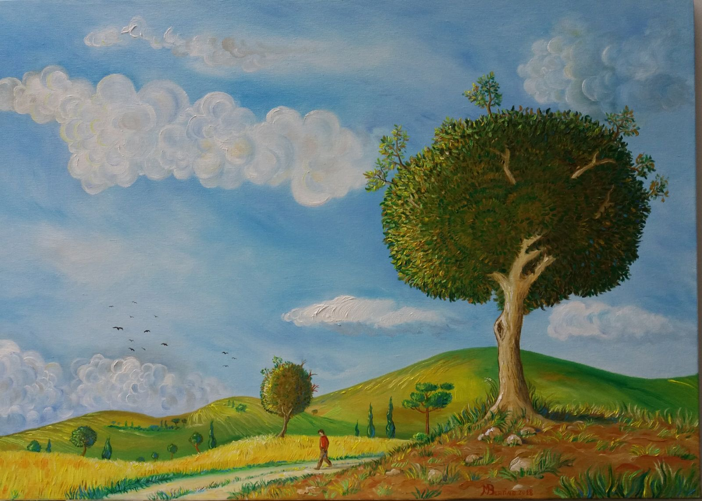
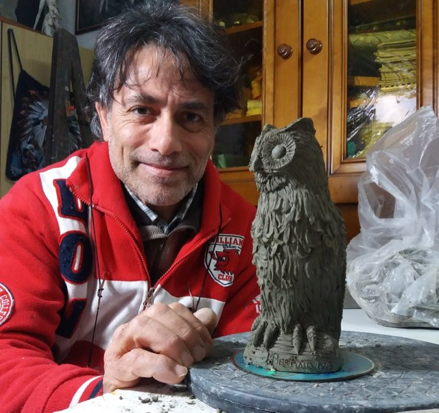

Pittore e scultore · Salento
Maurizio Bertino
Un’arte espressionista e non accademica. Ogni opera nasce da un’emozione e resta irripetibile: crea solo per chi cerca il pezzo unico.
In breve
Uniche, per forza di cose
Nato a Bienne (Svizzera ) nel ’65, frequenta le scuole a Lausanne fino all’età di 10 anni per poi trasferirsi in Italia.
Se si volesse provare a descrivere con una sola parola le opere di Bertino si potrebbe pensare a “Uniche”, questo perchè sarebbe impossibile riprodurre più copie delle stesse a causa dell’impossibilità dell’artista di ricreare quello che è stato il sentimento e l’emozione che lo ha portato alla loro creazione.

Il lavoro
Tre sentimenti, una sola mano
Pittura, scultura e la riproduzione degli oggetti dei nativi nordamericani: tre modi diversi di inseguire la stessa emozione.

La pittura
Paesaggi di fantasia, animali e nature morte. Olio su tela, iuta, faesite.
Guarda le opere →
La scultura
Terracotta, cartapesta e pietra leccese. Bassorilievo e altorilievo su vari materiali.
Guarda le opere →
Nativi d’America
Manufatti dei nativi americani, riprodotti e personalizzati nel dettaglio.
Guarda le opere →Il percorso
Da autodidatta, per necessità
Dalla Svizzera al Salento, senza studi accademici: come Bertino è arrivato a esporre, e chi ha scritto di lui.